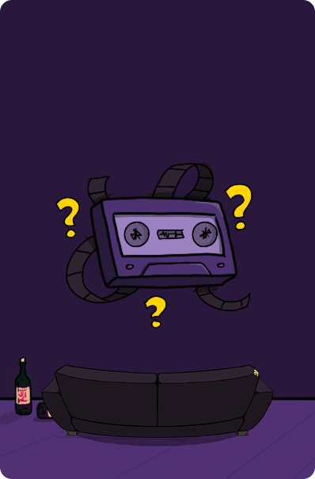
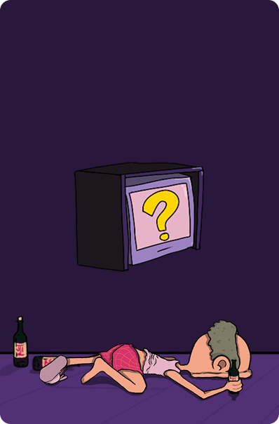
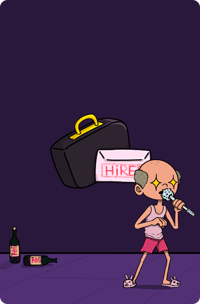

Golang
Websocket
Multijoueurs
HTML
CSS
JavaScript
À Propos
GroupieTracker est une application web multijoueur composée de trois jeux musicaux, jouables jusqu’à 6 joueurs simultanément, via navigateur. Le tout a été développé en Go avec une interface en HTML/CSS/JavaScript, et fonctionne localement sur le réseau Wi-Fi des joueurs.
Ce projet a été imaginé comme une plateforme de mini-jeux funs et rapides, autour de la musique, de la culture pop et de la réactivité.



GroupieTracker propose trois types de jeux musicaux :
- 🎵 Blindtest : Une musique se lance, soyez le plus rapide à deviner le titre !
- 🧏 Deaftest : Des paroles s’affichent, à vous de retrouver la chanson d’origine.
- 🔠 Scattegorie : Une lettre est tirée au sort, trouvez des mots correspondant à différentes catégories musicales qui commencent par cette lettre.
Fonctionnalités :
- Création ou rejoindre une room multijoueur
- Interface de connexion / accueil
- Scoreboard à la fin de chaque partie
- Jeu en réseau local (même Wi-Fi)
Contributions
Developpement :
- Développement du serveur en Go
- Mise en place des routes, sockets et gestion multijoueur
- Gestion des mécaniques de jeux
- Intégration de l’interface en HTML/CSS/JS
- Utilisation de Git pour le versionning collaboratif